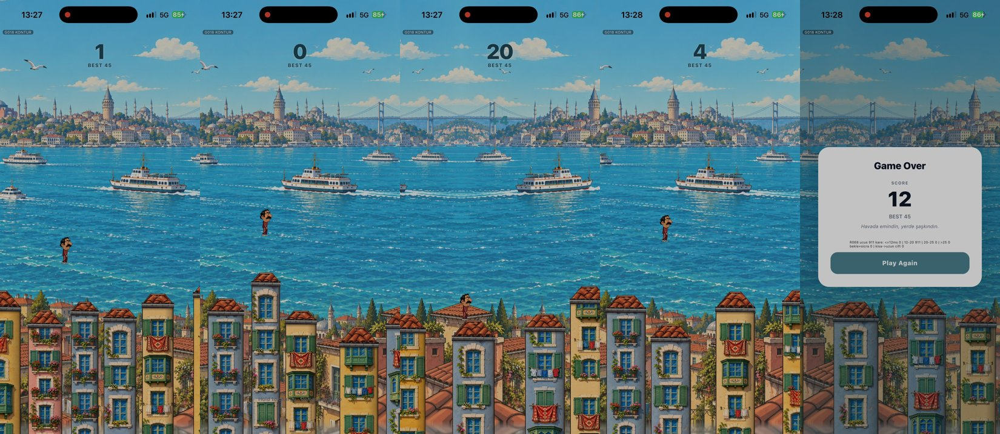

Üç bağımsız editör (sanat yönetmeni, oyun tasarımcısı, oyuncu/pazar) aynı 32 saniyelik telefon kaydını ve kodu ayrı ayrı inceledi. Üçü de aynı noktada buluştu: oyun güzel görünüyor ama küçük karakter, sessiz anlar ve jenerik oyun sonu kartı yüzünden "bir İstanbul oyunu" değil, "güzel bir zıplama oyunu" gibi okunuyor.

| Başlık | Puan | Neden |
|---|---|---|
| Kimlik / özgünlük | 7 | Galata, köprü, vapur, kilim, çamaşır ipi: İstanbul ilk karede okunuyor. Oyunun en güçlü kozu. |
| Genel | 5 | Arka plan güzel, oyun ise "kartpostalın önünde gezen küçük bir çıkartma" gibi. |
| Okunurluk | 5 | Kuleler artık ayrışıyor; karakter, "+4" ve "Hold to charge" yazısı kayboluyor. |
| Karakter | 4 | Çizim çok iyi (bıyık, bordo eşofman, uykulu göz) ama ekranın yaklaşık %5'i; yüz ifadesi görünmüyor. |
| Hareket / canlılık | 3 | İnişte toz, esneme, sarsıntı yok; çoklu kule atlaması ödüllendirilmiyor. |
| Arayüz | 3 | Gri, sistem fontlu, İngilizce kart; hata ayıklama satırı ve sürüm etiketi görünüyor. |
Önceki değerlendirmede (GORSEL-DEG-001) genel puan 6/5/5 idi; kuleler o zamandan beri belirgin biçimde iyileşti, şimdi zayıf halka kulelerin dışındaki her şey.
"Her zıplayış bir İstanbul anı."
Pazar editörünün önerdiği konum cümlesi. Spring Ninja'nın soyut kulelerine karşı bizim farkımız yer ve hikâye. Aşağıdaki fikirlerin hiçbiri fiziğe, kameraya ya da çatı siluetine dokunmuyor.
Her çarşamba sıfırlanan haftalık yarış; herkes aynı tohumla aynı kule dizisini oynar. Oyunun adı bir ritüele dönüşür: "Çarşamba geldi, kupa açıldı."
Arada Boğaz'dan geçen bir vapur hareketli platform olur. Üstüne inmek bonus ve "Vapuru yakaladın!" getirir; kaçırınca "Vapur kaçtı, simit kaldı." Beş saniyelik paylaşılabilir klip.
Skor arttıkça semt değişir (Balat → Galata → Karaköy → Kadıköy → yalılar) ve gökyüzü sabahtan gün batımına, ezanla ışıkları yanan geceye döner. "Kadıköy'e kadar gittim" demek "43 puan"dan daha çok paylaşılır.
Tek zıplamada geçilen her ip havada "tıng" der, çamaşırlar uçuşur. 3 ve üzerinde pencereden bir laf gelir: "Gördün mü Nermin, üç dam birden!" Çoklu atlamanın ödülü görünür ve işitilir olur.
Her 10 kulede bir pazar tezgâhlı çatı; merkeze iniş tezgâh bağırışı getirir, peş peşe merkez inişler çarpanı büyütür (x2, x3). Orta şerit anlam kazanır, beceri tavanı açılır.
Çatıda uyuyan kediler (merkeze inince uyanıp seni takip eder, oyun sonunda "4 kedi seni izledi", turlar arası koleksiyon), pencereden "Oğlum düşeceksin!" diyen teyze, inişte havalanan martılar.
Oyun sonu kartı Türkçe ve kilim çerçeveli olur; karikatür kafa konuşma balonunda bağlama göre değişen espriyi söyler (rekora 3 kala, ilk kulede düşüş, yeni rekor). Kart tek dokunuşla hikâye olarak paylaşılır.
frontend/ai_review_evidence/ANALIZ-2026-11-11/editor-sanat.md, editor-tasarim.md, editor-pazar.md.